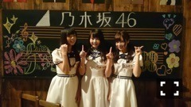

| 2015/07 20 Mon | 焼き込み好み。654回目 |


こんばんは！
ツアーに向けて頑張っています！
前回よりも公演数が多い。
体力勝負だー
8月が楽しみだー
のぎ天が最終回を迎えました。
終わってしまうのが
とても寂しいです。
のぎ天をきっかけに
ファンになってくださった方も
たくさんいました。
その中でも特に釣りサークルが好評で。
サークル内でいちばん釣れない
落ちこぼれ部長でしたが...。
釣れなくて悔しいし
釣ったら嬉しいし、美味しいし！
私自身も楽しんでいました。
アンダーライブヒット祈願の
滝行で泣いたことも忘れられない。
のぎ天だったから素直に気持ちを
吐き出しましたが、
自分は弱いということを
痛感しました。
他にも、
みんなでわいわいキャンプして
料理したり、肝試ししたり、
文芸サークルで監督して編集したり！
今までやったことないことに
挑戦しました＼(^o^)／
やるたび、新しい自分を出すことが
できた番組でした。
のぎ天を見てくださったみなさん
スタッフのみなさん
ありがとうございました！
そして、早出さん！
いつも優しくいじってくださって
とても嬉しかったです。
これからもよろしくお願いします。
ああいうはしゃいだ姿を
地上波でも出せたらいいな(^O^)
乃木中の部活の話。
私は中高、帰宅部だったため、
先輩後輩関係も特になかったのです、
習い事のバレエに専念していました。
小学校は飼育委員だった！
掃除して餌やりして、
アヒルを誘導してたよヽ(ﾟ､｡)ﾉ
メンバーの部活の思い出とか
聞いてると羨ましくなったけど、
自分にとっての部活は
バレエだったなあ...
NHK着信御礼！ケータイ大喜利
に出演しました。
見てくれたかな？
10周年記念SPに
豪華なゲストの皆さんの中
出演できて、本当に光栄でした...
改めて、おめでとうございます！

黒板に真洋と優里と落書きしたよ！
乃木坂46描いた∠( 'ω')／
24日 ミュージックステーション
25日 京都全国握手会
26日 京都個別握手会
まりか
コメント(438)
2015/07/20 23:42